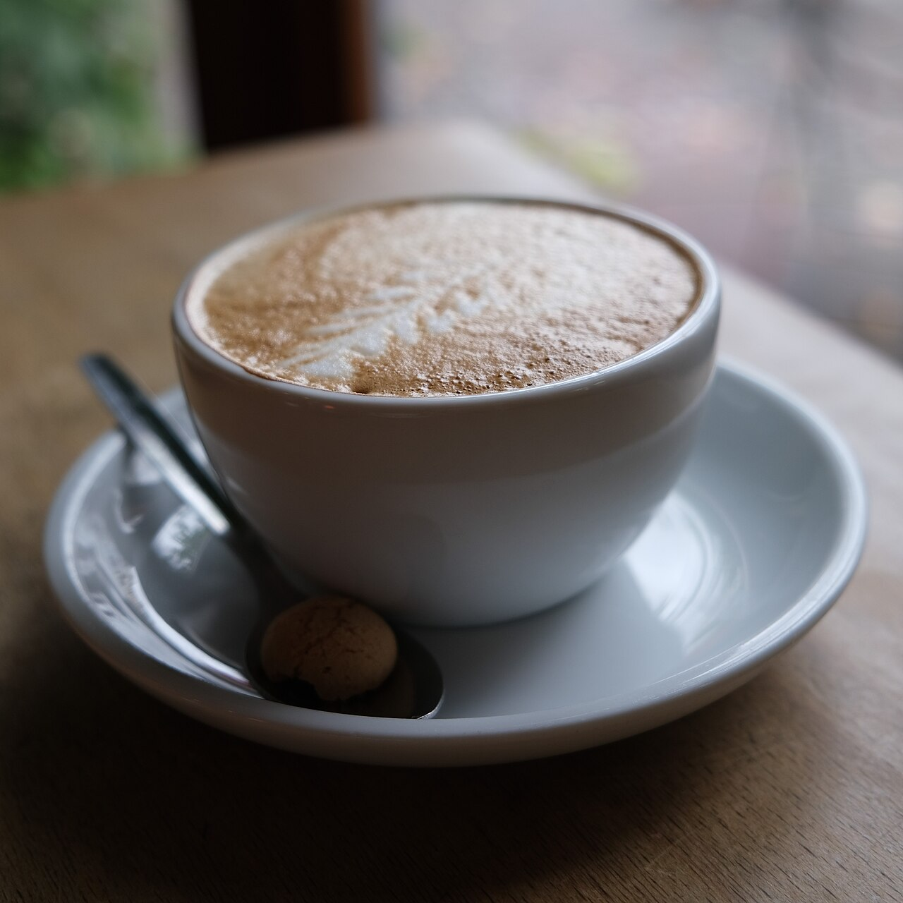

The Tuesday Table
Mixed ages. Supper and the Sunday talk.
Tuesdays, 7:00 pm · North side
Ask to join The Tuesday TableSmall Groups
Sundays are for gathering. Groups are for getting to know each other. Most meet in homes, every week or two, and you can try one without committing.


If it isn’t a fit, we will help you find another one. No hard feelings.
Small enough that you’ll be missed if you aren’t there.
Most groups discuss the Sunday message, and look after each other in between.
Mixed ages. Supper and the Sunday talk.
Tuesdays, 7:00 pm · North side
Ask to join The Tuesday TableBabysitting costs covered. Tiredness understood.
Wednesdays, 7:30 pm · Central
Ask to join Young ParentsWomen, coffee and Psalms before work.
Thursdays, 6:30 am · Central
Ask to join Morning LightBreakfast, honest talk, occasional woodwork.
Saturdays, 8:00 am · Riverside
Ask to join Men at the MillNeighbors learning to know their street.
Mondays, 7:00 pm · Riverside
Ask to join Over the FenceDinner at someone’s apartment, and big questions.
Tuesdays, 7:30 pm · Central
Ask to join Twenties and ThirtiesAfternoon tea and Scripture for those over 65.
Wednesdays, 2:00 pm · North side
Ask to join Golden HourFor those exploring faith or returning to it.
Thursdays, 8:00 pm · Online
Ask to join Questions WelcomeFive miles along the river, with conversation.
Saturdays, 9:30 am · Riverside
Ask to join Walk and TalkNo group matches all of that yet. Tell us what you’re looking for and we will try to help.